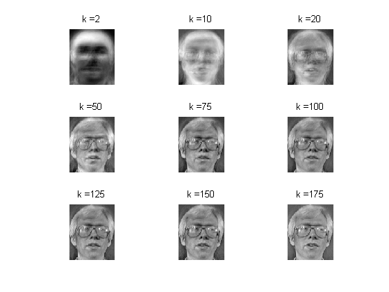
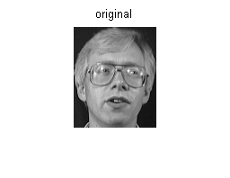
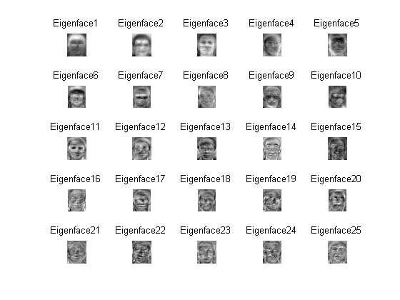
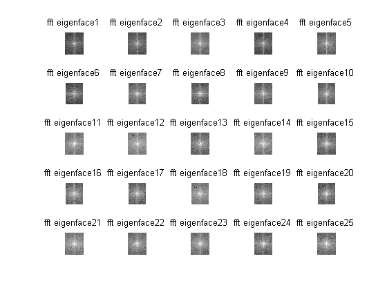

Contents
MyMainScript
tic;
Your code here
Q3
Observations
%Observations: %1. As k increses, power in higher frequency components in fft of eigenface % starts increasing %2. Higher values of k allows better reconstruction fname = uigetdir(); N = 35*5; d = 112*92; G=5; X = zeros(d,N); kArray = [2,10,20,50,75,100,125,150,175]'; kArraySize = size(kArray); rate = zeros(size(kArray)); Xsub = zeros(d,N); reconstructed = zeros(92*192); for m = 1:kArraySize k = kArray(m); for i = 1:35 for j=1:G address = strcat(fname,'/','att_faces/s',num2str(i),'/',num2str(j),'.pgm'); [src] = imread(address); X(:,G*(i-1)+j) = reshape(src,[],1); end end Xbar = mean(X')'; for i = 1:N Xsub(:,i) = X(:,i) - Xbar; end L = Xsub'*Xsub; [W,lam] = eig(L); eigVec = normc(Xsub*W); eigVeck = fliplr(eigVec(:,N-k+1:N)); alpha = eigVeck'*Xsub; %alpha(:,i) contains eigen coeffiecients of ith image %reconstruction of face 3 sample 4 reconstructed = eigVeck*alpha(:,5*1+4); reconstructed = reshape(reconstructed, 112,92); subplot(3,3,m); imshow(mat2gray(reconstructed));title(strcat('k = ',num2str(kArray(m)))); end original = reshape (X(:,5*1+4),112,92); figure imshow(mat2gray(original));title(strcat('original')); %eigenfaces figure for r=1:25 subplot(5,5,r); imshow(mat2gray(reshape(eigVec(:,N-r+1),112,92)),'InitialMagnification','fit'); title(strcat('Eigenface ',num2str(r))); end %fourier transform magnitudes of eigenfaces figure for r=1:25 subplot(5,5,r); tempIm = reshape(eigVec(:,N-r+1),112,92); tempFFT = fftshift(fft2(tempIm)); imshow(mat2gray(1+log(abs(tempFFT))),'InitialMagnification','fit'); title(strcat('fft eigenface ',num2str(r))); end toc;
Elapsed time is 22.197484 seconds.   